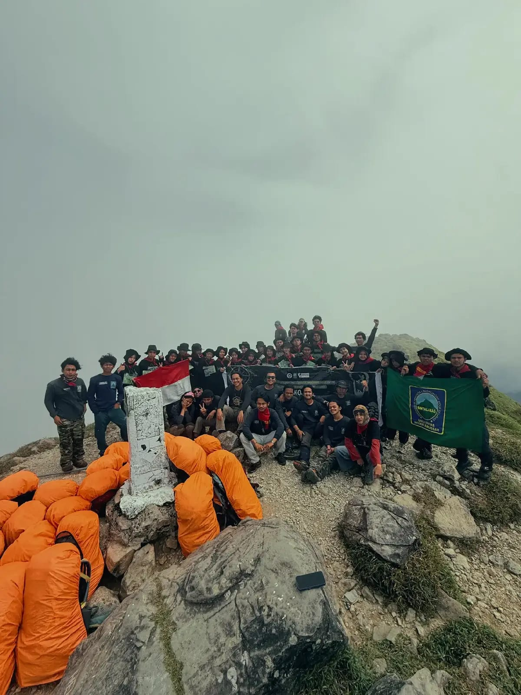

SINTALARAS UNM
AnggotaKeikutsertaan dalam SINTALARAS UNM menjadi bagian dari proses belajar di luar ruang kelas. Melalui kegiatan dan dinamika organisasi, saya berkesempatan untuk membangun kebersamaan, meningkatkan rasa tanggung jawab, serta ikut berkontribusi dalam kegiatan yang berhubungan dengan alam dan lingkungan.
"Lahir dari Keikhlasan Tumbuh dengan Keselarasan"